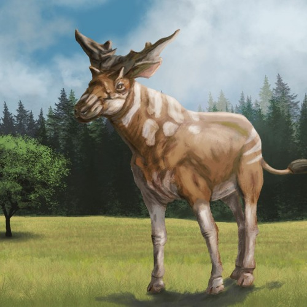

Información
Género
Sivatherium
Periodo
Plioceno inferior
Encontrado en
Puerto de la Cadena
Altura
2.2 metros en la cruz
Peso
0.5 - 1.2 t
Descripción
Sivatherium es un género extinto de mamíferos jiráfidos que vivieron en África y Eurasia. Se asemejaba a los actuales okapis, pero era mucho más grande y su cuerpo era de constitución mucho más robusta.
Con cerca de 3 metros de altura total y de hasta 1300 kg según estudios modernos, podría ser uno de los mayores rumiantes conocidos, rivalizando con las jirafas modernas y los mayores bóvidos.